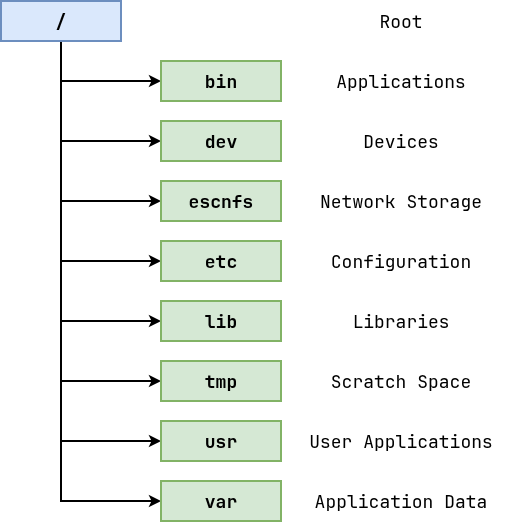
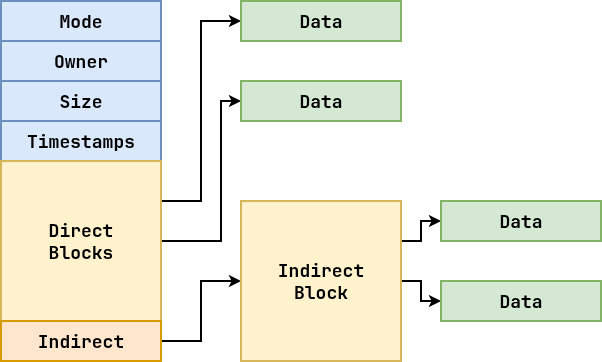
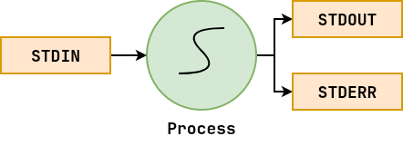
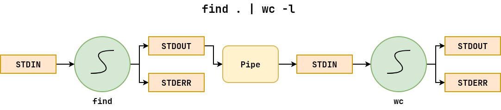

Files: File System¶
Where is ls located?
Ask the shell
$ which ls
Verify using absolute path
$ /usr/bin/ls
How does the shell know where to find programs
$ echo $PATH
View hier manual
$ man hier
Go to someone's home directory
$ cd ~pbui
$ pwd
The unix file system is structured as a hierarchical tree (man 7 hier).

Files: Metadata¶
How large is my ~/.bashrc?
Use ls
$ ls -a # Show dotfiles
$ ls -la
$ ls -l ~/.bashrc
Use stat
$ stat ~/.bashrc
Use du
$ du -h ~/.bashrc

Files: Permissions¶
How do I prevent people from reading my work?
Use chmod with octal
$ chmod 600 work
Use chmod with symbols
$ chmod +x work
| Owner | Group | World | Octal |
|---|---|---|---|
| r w x | r w x | r w x | |
| 1 1 0 | 0 0 0 | 0 0 0 | 600 |
| 1 1 1 | 1 0 1 | 1 0 1 | 755 |
Processes: Attributes¶
What programs am I running?
A process is a loaded instance of a program. Each process has:
-
Process ID (PID)
-
Parent Process ID (PPID)
-
UID / GUID
-
Priority
-
Terminal / TTY
List processes
$ ps ux # User processes
$ ps aux # All processes
Watch processes
$ top # Interactive
$ htop # Colorful
Search Processes
$ ps ux | grep process-name
$ pgrep process-name
Processes: Signals¶
How do I terminate a process?
$ sleep 60 & # Execute sleep in the background
[1] 23213
$ jobs # List jobs
[1]+ Running sleep 60 &
$ fg # Bring job to foreground
sleep 60
^Z # Suspend job
[1]+ Stopped sleep 60
$ bg # Background job
[1]+ sleep 60 &
$ kill %1 # Kill job
[1]+ Terminated sleep 60
| Signal Name | Signal Number | Operation |
|---|---|---|
| SIGINT | 2 | Interrupt the process |
| SIGTERM | 15 | Terminate the process |
| SIGKILL | 9 | Kill the process |
I/O: File Streams¶
How do you save the result of a command?
When a process is created, it automatically has three file streams:

Redirect stdout
$ command > output
Pipe stdout to tee
$ command | tee output
I/O: Pipelines¶
How do you ignore error messages?
A pipe connects the standard output of the first process to the standard input of the second process.

Redirect stdout and stderr to separate files
$ find /etc -type d > output 2> errors
Redirect both stdout and stderr to same file
$ find /etc -type d > combined 2>&1
$ find /etc -type d &> combined
Redirect stderr to stdout, then stdout to file
$ find /etc -type d 2>&1 > output
Redirect both stdout and stderr to tee program
$ find /etc -type d 2>&1 | tee combined
Redirect stderr to blackhole and stdout to tee program
$ find /etc -type d 2> /dev/null | tee output